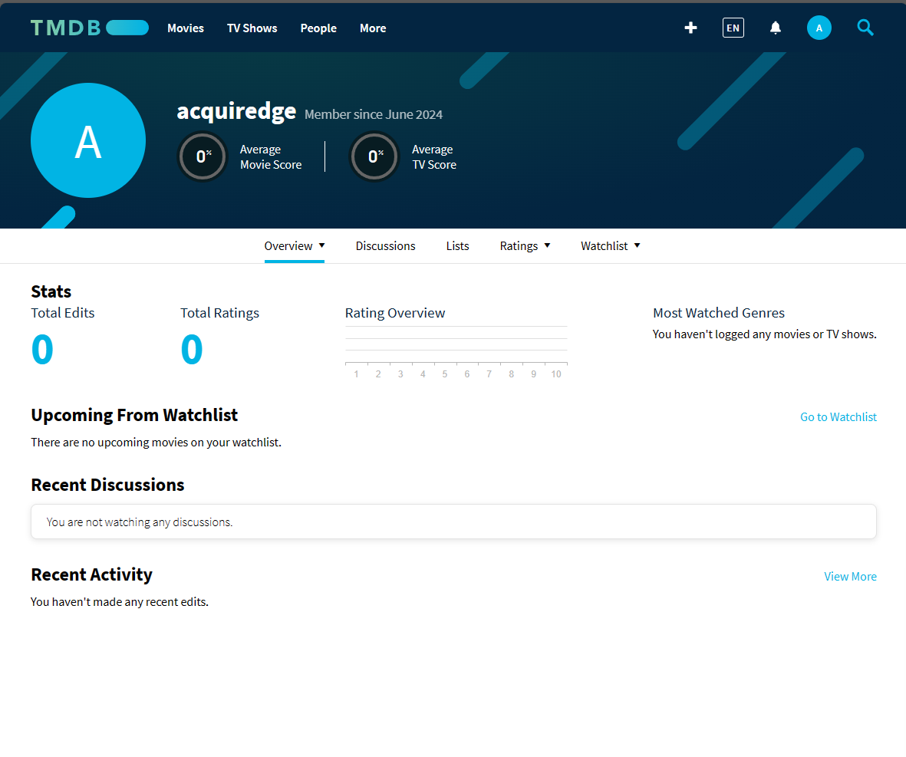

JSON APIs
Objectives
Key Terms
JSON
JavaScript Object Notation; a JavaScript-like standard for representing data; useful for sharing data between programs, including programs that are not using JavaScript
{
"name": "Mickey",
"animalType": "mouse"
"earCount": 2
}
$.getJSON(url, callback)
JQuery function used to retrieve JSON data asynchronously from a remote server
$.getJSON("http://example.com/words.json", function(data){
console.log(data.length);
})
API (Application Progamming Interface)
a way for different applications to communicate with one another. Usually transfers data using JSON data format.
JSON APIs Assignment
JSON Modeling Background
JavaScript Object Notation (JSON) is a standardized format for representing data.
Prior to JSON, XML was the most popular standard for representing data. JSON has mostly won this formatting war due to how easy it is to read for both humans and computers.
The syntax for JSON was inspired by the JavaScript Object literal notation (a long way of saying "the way you normally instantiate objects in JavaScript"), but there are a few notable differences:
- All properties/keys in JSON must be in quotes.
- All JSON strings must use double quotes.
-
A few more not worth mentioning here.
Here's an example of some JSON data representing cocktail descriptions:
[ { "name": "mojito", "image_url": "https://d2sf2a832xqb4v.cloudfront.net/detail_Skinny_Mojito_4.png?mtime=20151201224540", "description": "A delicious sweet drink with fresh mint. Best enjoyed on a beach!", "ingredients": [ "rum", "mint", "cane sugar" ] }, { "name": "martini", "image_url": "http://www.uvvodka.com/wp-content/uploads/2013/01/recipelarge_uvmartini.png", "description": "A classy, classic drink that you'll love if you're into olives.", "ingredients": [ "olives", "vermouth", "gin" ] } ]
If this looks familiar to you, that's because all JSON is valid JavaScript code for representing an object literal. However, not all JavaScript is valid JSON.
Take a minute and read through a quick description of JSON in W3 Schools
APIs Background
In order for any application to communicate with another, it must set up an API, or Application Programming Interface.
If you imagine an application as a secure building, an API is like a doorway into the building. It acts as a controlled opening into the building and the services and data inside. APIs can regulate who enters (makes a request) and what data they can access.
Here’s a video that does a good job of summarizing what an API is:

Important Takeaways
-
APIs allow for two applications to communicate (transfer data) with each other.
-
APIs are like a menu of information that an application exposes to the public. This allows an application to pick and choose what information they want to expose to the world, which keeps the rest of it's data secure.
-
REST APIs are web APIs that allow two applications to communicate over the internet. These are the most common APIs, and are what we will be working with in this course.
Calling APIs with JQuery
When applications use REST APIs, the data that they transfer is often in JSON format. There are a number of ways a JavaScript application can make an API call to a server, but the simplest way is to use a JQuery function called getJSON().
Just like our earlier asynchronous examples with events, the function for loading JSON is also asynchronous.
The reason for this is that loading data from an external source takes a (relatively) long time. The application has to wait for another server that may be located far away to respond.
This is where the "asynchronous" part comes in. If an application simply locked up while waiting for data to come back from another server, then it wouldn't be able to do anything else in the meantime. By using an asynchronous callback, the application is able to perform other operations while it waits.
Here's an example of how you could use getJSON() to load data with a bunch of animal names and simply log the length of the list:
$.getJSON( 'https://raw.githubusercontent.com/boennemann/animals/master/words.json', function( data ) {
console.log(data.length); // This will be logged later, after the data is loaded asynchronously.
})
console.log('Hello'); // This will be logged first.
You can find more examples of getJSON() usage on the official JQuery API Documentation page
Complete JSON APIs Exercise and Get TMDB API Key before continuing.
JSON APIs Exercise
Introduce Query Parameters in this exercise
Get TMDB API Key
Not all APIs are "public", meaning that anyone can access and call them without identifying themselves first.
In fact, most useful APIs out there are "private". So, we will need to identify or authenticate ourselves in some way when we call the API, so that the server knows who we are and can make sure we're authorized to use the API.
One of the ways to authenticate ourselves is by using an API Key.
To prepare for our capstone project, we need an API Key from The Movie Database (TMDB) and call a few APIs to search for some movies. Follow the instructions below to get your API key.
-
Head to TMDB, and create an account by hitting "Join TMDB" at the top right corner.
-
Fill in your account details, and after hitting "Sign Up", you should see a page like this:
-
Head to your email, and find the email from "The Movie Database" with the subject "Email verification required" to verify your email.
-
After you click the button to verify your email, sign in to TMDB with your login details, and you should see an account page like this:

-
Navigate to "Overview" > "Edit Profile", and hit "API" on the side-menu. Find the "Request an API Key" heading and click to request a new key.
-
Choose "Developer", Accept the Terms of Service, and fill out the form like below. The bottom portion will be your own personal information.:
-
After submitting, you should see a page that contains your API Key. Remember where this is. We'll need to use this for our Capstone Project.
Submitting
Please follow the instructions in submitting an exercise to submit your assignment solution.